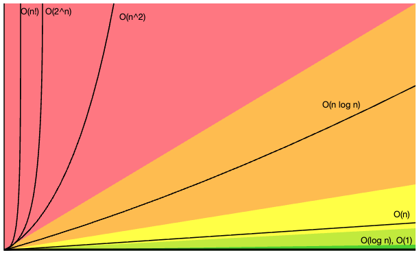

Time Complexity Cheat Sheet
Big-O growth rates, common data structure operations, binary heap, and sorting algorithms.
Big-O Complexity Chart

Common Data Structure Operations
| Data Structure | Time Complexity | Space Complexity | |||||||
|---|---|---|---|---|---|---|---|---|---|
| Average | Worst | Worst | |||||||
| Access | Search | Insertion | Deletion | Access | Search | Insertion | Deletion | ||
| Array | Θ(1) | Θ(n) | Θ(n) | Θ(n) | Θ(1) | Θ(n) | Θ(n) | Θ(n) | Θ(n) |
| Stack | Θ(n) | Θ(n) | Θ(1) | Θ(1) | Θ(n) | Θ(n) | Θ(1) | Θ(1) | Θ(n) |
| Queue | Θ(n) | Θ(n) | Θ(1) | Θ(1) | Θ(n) | Θ(n) | Θ(1) | Θ(1) | Θ(n) |
| Singly-Linked List | Θ(n) | Θ(n) | Θ(1) | Θ(1) | Θ(n) | Θ(n) | Θ(1) | Θ(1) | Θ(n) |
| Doubly-Linked List | Θ(n) | Θ(n) | Θ(1) | Θ(1) | Θ(n) | Θ(n) | Θ(1) | Θ(1) | Θ(n) |
| Skip List | Θ(log n) | Θ(log n) | Θ(log n) | Θ(log n) | Θ(n) | Θ(n) | Θ(n) | Θ(n) | Θ(n log n) |
| Hash Table | N/A | Θ(1) | Θ(1) | Θ(1) | N/A | Θ(n) | Θ(n) | Θ(n) | Θ(n) |
| Binary Search Tree | Θ(log n) | Θ(log n) | Θ(log n) | Θ(log n) | Θ(n) | Θ(n) | Θ(n) | Θ(n) | Θ(n) |
| Cartesian Tree | N/A | Θ(n) | Θ(1) | Θ(1) | N/A | Θ(n) | Θ(n) | Θ(n) | Θ(n) |
| B-Tree | Θ(log n) | Θ(log n) | Θ(log n) | Θ(log n) | Θ(log n) | Θ(log n) | Θ(log n) | Θ(log n) | Θ(n) |
| Red-Black Tree | Θ(log n) | Θ(log n) | Θ(log n) | Θ(log n) | Θ(log n) | Θ(log n) | Θ(log n) | Θ(log n) | Θ(n) |
| Splay Tree | Θ(log n) | Θ(log n) | Θ(log n) | Θ(log n) | Θ(log n) | Θ(log n) | Θ(log n) | Θ(log n) | Θ(n) |
| AVL Tree | Θ(log n) | Θ(log n) | Θ(log n) | Θ(log n) | Θ(log n) | Θ(log n) | Θ(log n) | Θ(log n) | Θ(n) |
| KD Tree | Θ(log n) | Θ(log n) | Θ(log n) | Θ(log n) | Θ(n) | Θ(n) | Θ(n) | Θ(n) | Θ(n) |
| Binary Heap (Min / Max) | Θ(1) | Θ(n) | Θ(log n) | Θ(log n) | Θ(1) | Θ(n) | Θ(log n) | Θ(log n) | Θ(n) |
Array Sorting Algorithms
| Algorithm | Time Complexity | Space Complexity | ||
|---|---|---|---|---|
| Best | Average | Worst | Worst | |
| Quicksort | Ω(n log n) | Θ(n log n) | O(n²) | O(log n) |
| Mergesort | Ω(n log n) | Θ(n log n) | O(n log n) | O(n) |
| Timsort | Ω(n) | Θ(n log n) | O(n log n) | O(n) |
| Heapsort | Ω(n log n) | Θ(n log n) | O(n log n) | O(1) |
| Bubble Sort | Ω(n) | Θ(n²) | O(n²) | O(1) |
| Insertion Sort | Ω(n) | Θ(n²) | O(n²) | O(1) |
| Selection Sort | Ω(n²) | Θ(n²) | O(n²) | O(1) |
| Tree Sort | Ω(n log n) | Θ(n log n) | O(n²) | O(n) |
| Shell Sort | Ω(n log n) | Θ(n (log n)²) | O(n (log n)²) | O(1) |
| Bucket Sort | Ω(n+k) | Θ(n+k) | O(n²) | O(n) |
| Radix Sort | Ω(nk) | Θ(nk) | O(nk) | O(n+k) |
| Counting Sort | Ω(n+k) | Θ(n+k) | O(n+k) | O(k) |
| Cubesort | Ω(n) | Θ(n log n) | O(n log n) | O(n) |
What Θ, O, and Ω Mean
O — Big O
O(f(n)) is an upper bound: the algorithm never grows faster than f(n) (up to a constant) for large n.
Example: merge sort is O(n log n) in the worst case — it will not be worse than that.
Ω — Big Omega
Ω(f(n)) is a lower bound: the algorithm takes at least on the order of f(n) in the case being described (often the best case).
Example: insertion sort is Ω(n) — even the best input still needs a linear scan.
Θ — Big Theta
Θ(f(n)) is a tight bound: the growth is both O(f(n)) and Ω(f(n)), so it is on the order of f(n) from both sides.
Example: binary search is Θ(log n) in the worst case — not just “at most,” but exactly that order.
Informal rule: O = “no worse than”, Ω = “no better than”, Θ = “exactly on the order of”. Everyday speech often uses O for all three.